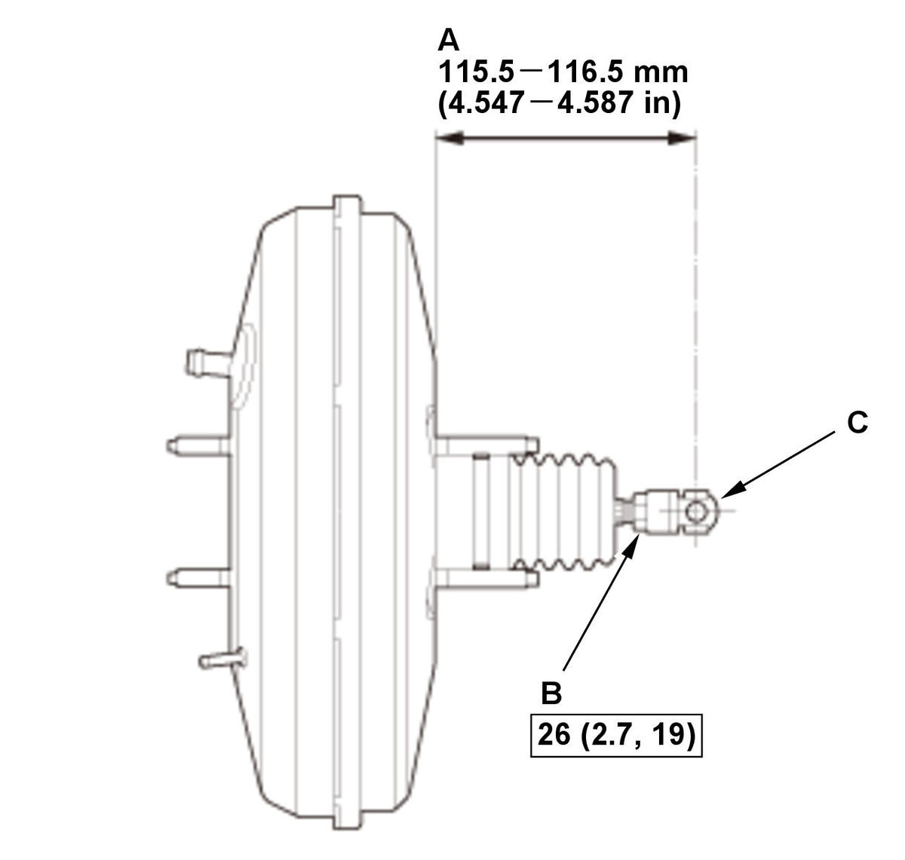

Brake Booster Pushrod Clearance Adjustment (Type-R) (2017 2018 2019 2020 2021): Adjustment
NOTE:
- How to read the torque specifications .
- Brake booster pushrod to piston clearance must be checked and readjusted before installing a new master cylinder.
- The master cylinder assembly comes with a tool that must be used to adjust the clearance between the brake booster pushrod and the master cylinder piston.
- Use only the tool that comes with the new master cylinder to check the pushrod clearance. Do not use any other tool.
- Make sure to discard the tool supplied with the master cylinder after its use.
- The brake booster must be installed on the vehicle before doing the pushrod clearance adjustment.
- If the booster is removed, check the pushrod length (A) as shown. If the length is incorrect, loosen the pushrod locknut (B), and turn the yoke (C) in or out to adjust.

Courtesy of HONDA, U.S.A., INC.- Brake Booster Pushrod Clearance - Adjust
1. Measure the clearance between the tool (A) supplied with master cylinder and brake booster pushrod (B). 2. Make sure that the tool is lying flat against the surface (C) of the brake booster, and that the tip of the tool contacts the pushrod.
- If the tool will not lie flat (D) or there is a gap (E) between the tool and the pushrod, go to step 3.
- If the clearance is correct, install the master cylinder.
3. If the clearance is incorrect, use the booster piston holder to hold the pushrod (A) and turn the adjusting screw (B) clockwise to move the pushrod inwards or counterclockwise to move it outward.